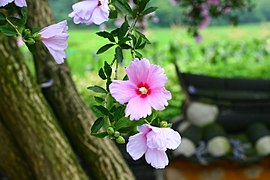
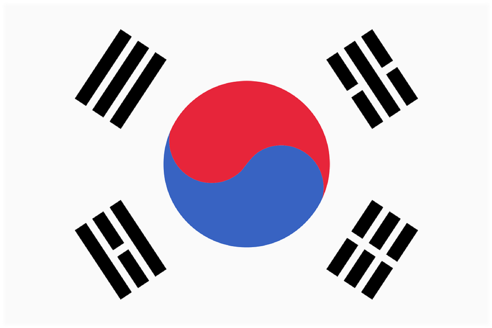

韓国(大韓民国)は日本、中国、台湾、モンゴルと共に東アジアに属し、朝鮮半島(韓半島)の南部に位置しています。
韓国の行政区画は以下のように構成されています。
1特別市
서울(ソウル)
6広域市
부산(釜山、プサン)
대구(大邱、テグ)
인천(仁川、インチョン)
광주(光州、クァンジュ)
대전(大田、テジョン)
울산(蔚山、ウルサン)
1特別自治市
세종(世宗、セジョン) − 行政中心の都市です
8道
경기(京畿、キョンギ)
강원(江原、カンウォン)
충청남/북(忠清南・北、チュンチョンナム・ブク)
전라남/북(全羅南・北、チョルラナム・ブク)
경상남/북(慶尚南・北、キョンサンナム・ブク)
1特別自治道
제주(濟州、チェジュ)
首都 : ソウル
面積 : 100,363km^2 (日本の約0.27倍)
人口 : 51,817,851人
公用語 : 韓国語(標準語)
公用文字 : 한글(ハングル)
国歌 : 애국가(エーグッカ、愛国歌) YouTube
国花 : 무궁화(ムグンファ、ムクゲの花)
国旗 : 태극기(テグッキ、太極旗)
